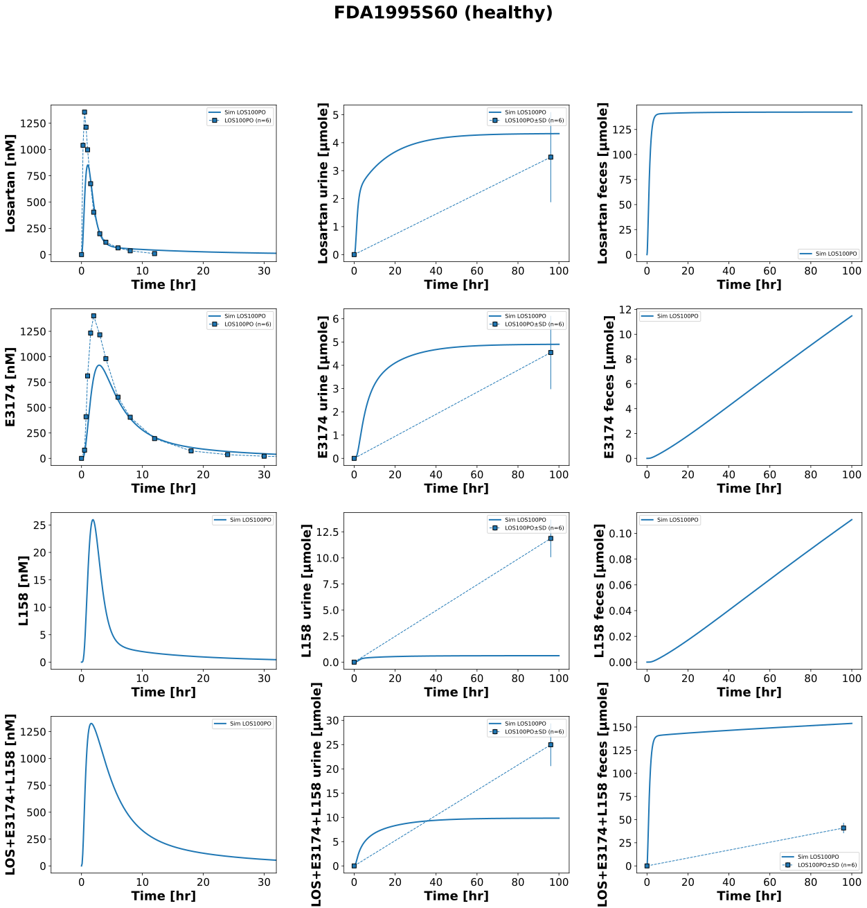
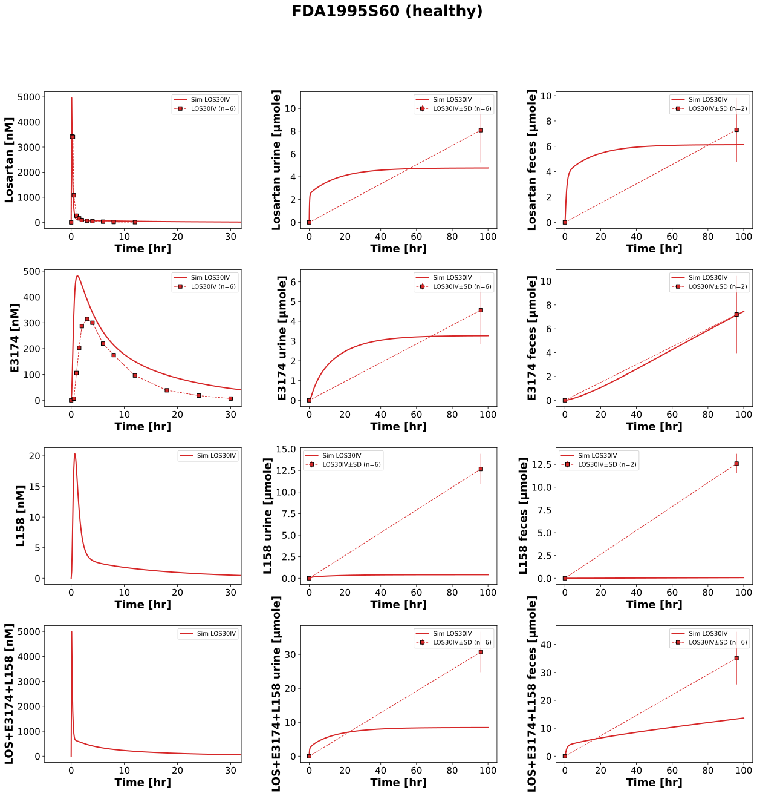
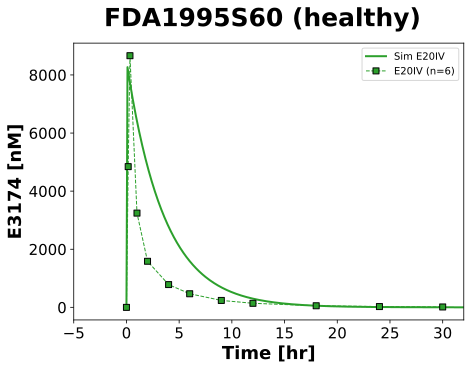

|  |
|  |
|  |
../../../../experiments/studies/fda1995S60.py
from typing import Dict
from sbmlsim.data import DataSet, load_pkdb_dataframe
from sbmlsim.fit import FitMapping, FitData
from sbmlutils.console import console
from pkdb_models.models.losartan.experiments.base_experiment import (
LosartanSimulationExperiment,
)
from pkdb_models.models.losartan.experiments.metadata import (
Tissue, Route, Dosing, ApplicationForm, Health,
Fasting, LosartanMappingMetaData, Coadministration, Genotype,
)
from sbmlsim.plot import Axis, Figure
from sbmlsim.simulation import Timecourse, TimecourseSim
from pkdb_models.models.losartan.helpers import run_experiments
class FDA1995S60(LosartanSimulationExperiment):
"""Simulation experiment of FDA1995S60."""
doses = {
"LOS100PO": 100,
"LOS30IV": 30,
"E20IV": 20
}
routes = {
"LOS100PO": "PO",
"LOS30IV": "IV",
"E20IV": "IV",
}
substances = {
"LOS100PO": "los", #14C Losartan
"LOS30IV": "los", #14C Losartan
"E20IV": "e3174",
}
colors = {
"LOS100PO": "tab:blue",
"LOS30IV": "tab:red",
"E20IV": "tab:green",
}
interventions = list(doses.keys())
infos = {
"LOS100PO": {
"[Cve_los]": "losartan",
"Aurine_los": "losartan_urine",
"Afeces_los": None,
"[Cve_e3174]": "exp3174",
"Aurine_e3174": "exp3174_urine",
"Afeces_e3174": None,
"[Cve_l158]": None,
"Aurine_l158": "l158_urine",
"Afeces_l158": None,
"[Cve_total]": None,
"Aurine_total": "losartan_total_urine",
"Afeces_total": "losartan_total_feces",
},
"LOS30IV": {
"[Cve_los]": "losartan",
"Aurine_los": "losartan_urine",
"Afeces_los": "losartan_feces",
"[Cve_e3174]": "exp3174",
"Aurine_e3174": "exp3174_urine",
"Afeces_e3174": "exp3174_feces",
"[Cve_l158]": None,
"Aurine_l158": "l158_urine",
"Afeces_l158": "l158_feces",
"[Cve_total]": None,
"Aurine_total": "losartan_total_urine",
"Afeces_total": "losartan_total_feces",
},
"E20IV": {
"[Cve_e3174]": "exp3174",
}
}
info_e3174 = {
"[Cve_e3174]": "exp3174",
"Aurine_e3174": "exp3174 urine",
"Afeces_e3174": "exp3174 feces",
}
def datasets(self) -> Dict[str, DataSet]:
dsets = {}
for fig_id in ["Fig1", "Tab60_2B"]:
df = load_pkdb_dataframe(f"{self.sid}_{fig_id}", data_path=self.data_path)
for label, df_label in df.groupby("label"):
dset = DataSet.from_df(df_label, self.ureg)
# unit conversion to mole/l
if not "urine" in label and not "feces" in label:
if label.startswith("losartan_"):
dset.unit_conversion("mean", 1 / self.Mr.los)
elif label.startswith("exp3174_"):
dset.unit_conversion("mean", 1 / self.Mr.e3174)
dsets[f"{label}"] = dset
# console.print(dsets)
# console.print(dsets.keys())
return dsets
def simulations(self) -> Dict[str, TimecourseSim]:
Q_ = self.Q_
tcsims = {}
for intervention in self.interventions:
dose = self.doses[intervention]
route = self.routes[intervention]
substance = self.substances[intervention]
tcsims[f"{intervention}"] = TimecourseSim(
[Timecourse(
start=0,
end=100 * 60, # [min]
steps=1000,
changes={
**self.default_changes(),
"BW": Q_(78.6, "kg"), #value from Lo1995
f"{route}DOSE_{substance}": Q_(dose, "mg"),
},
)]
)
return tcsims
def fit_mappings(self) -> Dict[str, FitMapping]:
mappings = {}
for intervention in self.interventions:
route = self.routes[intervention]
info = self.infos[intervention]
for k, sid in enumerate(info):
name = info[sid]
if not name:
continue
tissue = Tissue.PLASMA
if "urine" in name:
tissue = Tissue.URINE
elif "feces" in name:
tissue = Tissue.FECES
mappings[f"fm_{name}_{intervention}"] = FitMapping(
self,
reference=FitData(
self,
dataset=f"{name}_{intervention}",
xid="time",
yid="mean",
yid_sd="mean_sd" if ("urine" in name or "feces" in name) else None,
count="count",
),
observable=FitData(
self, task=f"task_{intervention}", xid="time", yid=sid,
),
metadata=LosartanMappingMetaData(
tissue=tissue,
route=Route.PO if route == "PO" else Route.IV,
application_form=ApplicationForm.TABLET if route == "PO" else ApplicationForm.SOLUTION,
dosing=Dosing.SINGLE,
health=Health.HEALTHY,
fasting=Fasting.FASTED,
coadministration=Coadministration.NONE,
genotype=Genotype.NR,
),
)
#console.print(mappings)
return mappings
def figures(self) -> Dict[str, Figure]:
return {
**self.fig_los(),
**self.fig_e3174(),
}
def fig_los(self) -> Dict[str, Figure]:
figures = {}
for intervention in ["LOS100PO", "LOS30IV"]:
info = self.infos[intervention]
fig = Figure(
experiment=self,
sid=f"Fig1_{intervention}",
num_cols=3,
num_rows=4,
name=f"{self.__class__.__name__} (healthy)",
)
plots = fig.create_plots(
xaxis=Axis(self.label_time, unit=self.unit_time), legend=True
)
plots[0].set_yaxis(self.label_los, unit=self.unit_los)
plots[1].set_yaxis(self.label_los_urine, unit=self.unit_los_urine)
plots[2].set_yaxis(self.label_los_feces, unit=self.unit_los_feces)
plots[3].set_yaxis(self.label_e3174, unit=self.unit_e3174)
plots[4].set_yaxis(self.label_e3174_urine, unit=self.unit_e3174_urine)
plots[5].set_yaxis(self.label_e3174_feces, unit=self.unit_e3174_feces)
plots[6].set_yaxis(self.label_l158, unit=self.unit_l158)
plots[7].set_yaxis(self.label_l158_urine, unit=self.unit_l158_urine)
plots[8].set_yaxis(self.label_l158_feces, unit=self.unit_l158_feces)
plots[9].set_yaxis(self.label_total, unit=self.unit_total)
plots[10].set_yaxis(self.label_total_urine, unit=self.unit_total_urine)
plots[11].set_yaxis(self.label_total_feces, unit=self.unit_total_feces)
for k in [0, 3, 6, 9]:
plots[k].xaxis.max = 32
for k, sid in enumerate(info):
# simulation
plots[k].add_data(
task=f"task_{intervention}",
xid="time",
yid=sid,
label=f"Sim {intervention}",
color=self.colors[intervention]
)
# data
name = info[sid]
if name:
plots[k].add_data(
dataset=f"{name}_{intervention}",
xid="time",
yid="mean",
yid_sd="mean_sd" if ("urine" in name or "feces" in name) else None,
count="count",
label=f"{intervention}",
color=self.colors[f"{intervention}"]
)
figures[fig.sid] = fig
return figures
def fig_e3174(self) -> Dict[str, Figure]:
intervention = "E20IV"
info = self.infos[intervention]
fig = Figure(
experiment=self,
sid=f"Fig1_{intervention}",
name=f"{self.__class__.__name__} (healthy)",
)
plots = fig.create_plots(
xaxis=Axis(self.label_time, unit=self.unit_time, max=32), legend=True
)
plots[0].set_yaxis(self.label_e3174, unit=self.unit_e3174)
for k, sid in enumerate(info):
# simulation
plots[k].add_data(
task=f"task_{intervention}",
xid="time",
yid=sid,
label=f"Sim {intervention}",
color=self.colors[intervention]
)
# data
name = info[sid]
plots[k].add_data(
dataset=f"{name}_{intervention}",
xid="time",
yid="mean",
yid_sd=None,
count="count",
label=f"{intervention}",
color=self.colors[f"{intervention}"]
)
return {
fig.sid: fig
}
if __name__ == "__main__":
run_experiments(FDA1995S60, output_dir=FDA1995S60.__name__)
{kind=link}
{kind=link}
{kind=link}